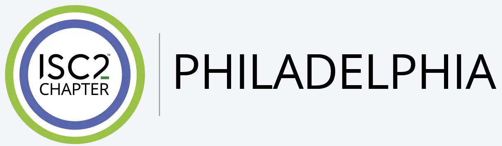

Thank you to the people who help make this hub and the local community better.

Cybersecurity professional and active member of the ISC2 Philadelphia chapter, supporting local practitioners through community engagement, mentoring, and knowledge sharing.